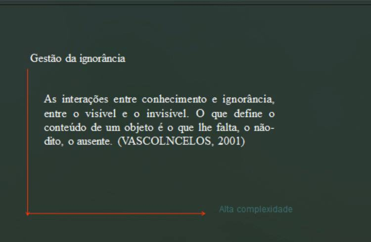
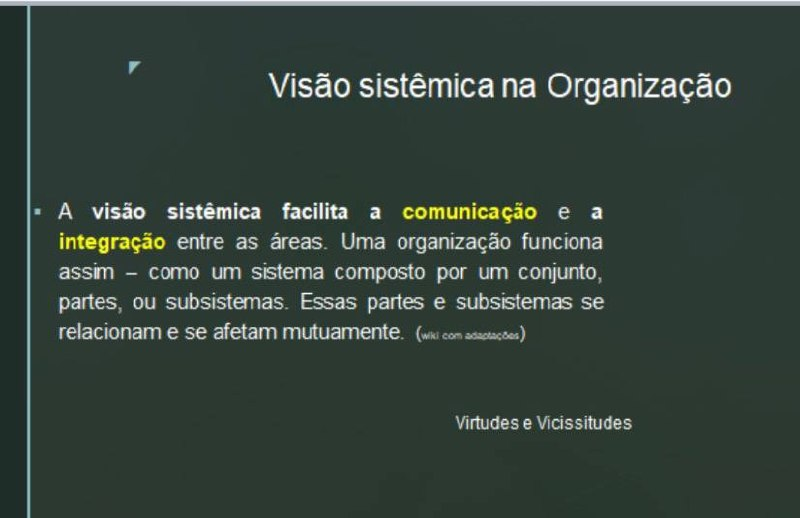
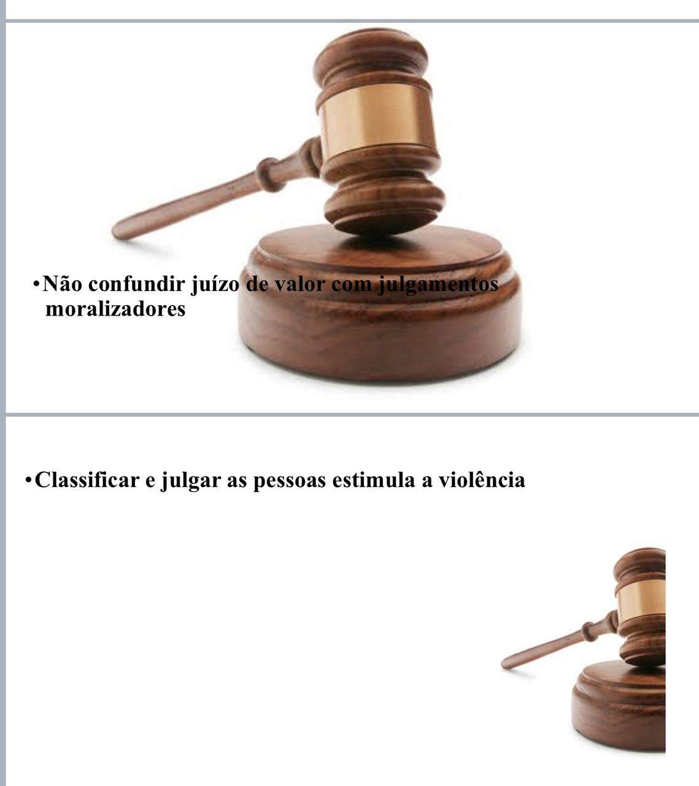
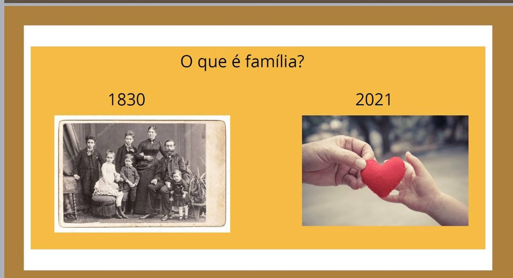
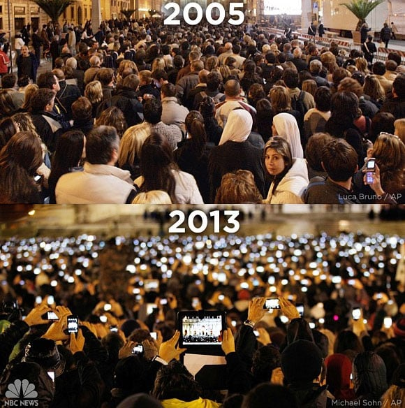
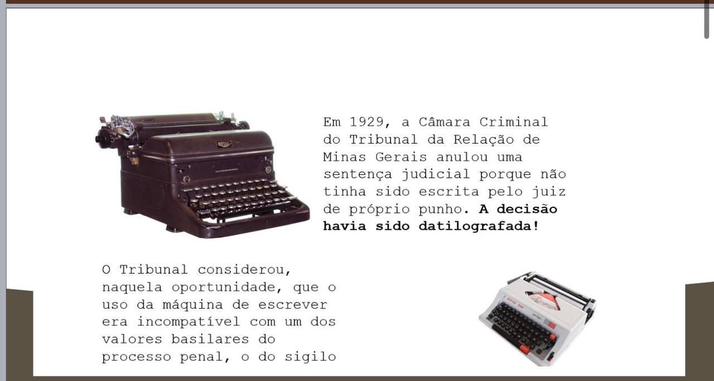
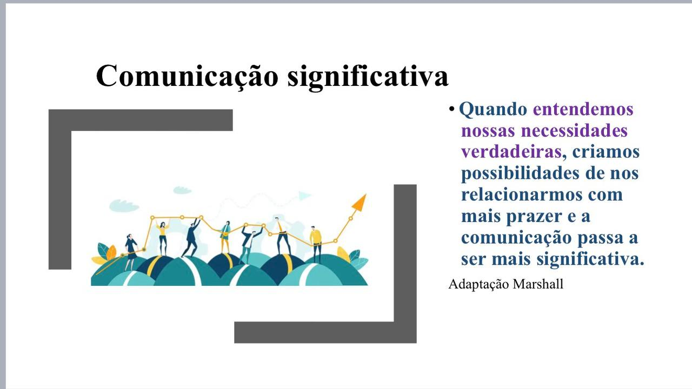

O que precisamos perceber antes de uma reação automática?
Formação de Gestores · TJRS
Comunicação AssertivaInteligência Emocional e Comunicação Não Violenta
Dia 2Formação de Gestores · TJRS · Dia 2
Bom dia!Como você chega para este segundo dia?
Observe, em silêncio, como estão seu corpo, sua energia e sua atenção agora. Não é necessário compartilhar.
1 minutoRetomada do Dia 1 · Grupo do Cochicho
Conversem em duplas
Do que aprendemos ontem, o que mais pode ampliar nossa margem de escolha antes de reagirmos automaticamente?
Desafio: construam uma única frase, curta e clara.
Instruções · 1 minuto
Construção da frase-síntese
Organizem a resposta em três movimentos
O que precisamos compreender sobre a situação e nossa experiência?
O que podemos escolher fazer a partir dessa compreensão?
Produto: uma frase-síntese da dupla.
4 minutos
Retomada coletiva
Vamos ouvir as sínteses
Vamos ouvir até quatro duplas. Cada dupla terá até 45 segundos.
Identifiquem o que aparece como percepção, compreensão e escolha.
Mapa da escolha
Da reação automática à ação intencional
Percebercorpo • emoção • intensidade • impulso›
Compreenderfato e interpretação • gatilho • contexto • consequência›
EscolherPAUSA • reavaliação • estratégia proporcional • ação intencional
Hoje avançaremos para a relação: comunicação clara, escuta e interação responsável com o outro.
Sistematização e ponte · 4 minutosDa reação à resposta
Como eu resolvo os problemas?
O que orienta minhas escolhas quando sou contrariado, pressionado ou provocado?
Comunicação e liderança
Como me comunico com a minha equipe?
Minha forma de comunicar favorece clareza, escuta e responsabilidade compartilhada?
Antes de interpretar
O que eu sei, o que suponho e o que ainda não sei?
Comunicação assertiva exige reconhecer lacunas de informação antes de completar a história com julgamentos.
Que pergunta preciso fazer antes de concluir?

Visão sistêmica na organização
As partes se relacionam e se afetam mutuamente
Uma organização é um sistema formado por partes interdependentes. A comunicação pode integrar áreas, conectar decisões e revelar impactos que não aparecem quando observamos cada parte isoladamente.
Que efeitos minha comunicação produz nas outras partes do sistema?

Observação sem julgamento
Avaliar uma conduta não é rotular uma pessoa
Para conversar sobre problemas, descreva fatos e impactos sem transformar sua interpretação em sentença sobre o outro.
Estou descrevendo o que ocorreu ou classificando quem a pessoa é?

Juízo de valor não é julgamento moralizador
Podemos avaliar uma conduta, seus impactos e sua adequação sem definir o valor da pessoa.
Classificar e julgar pessoas favorece a violência
Rótulos fecham a escuta. Fatos observáveis e necessidades abrem espaço para diálogo e responsabilização.
Significados mudam
Contexto, tempo e cultura alteram nossas interpretações
Tecnologias, hábitos e relações mudam. Uma resposta adequada ontem pode não servir hoje. Compreender o contexto amplia nossa margem de escolha.
Que mudança de contexto ainda não entrou na minha leitura do problema?

O mesmo acontecimento · 2005 × 2013
Tecnologia muda comportamentos

Praça de São Pedro, anúncios de Bento XVI e Francisco. Fotos: Luca Bruno/AP e Michael Sohn/AP.
Em apenas oito anos, o que mudou na forma de viver, registrar e compartilhar o mesmo tipo de acontecimento?
Contexto em transformação · 2 de 2
Práticas também mudam de significado

O que hoje parece inadequado pode ser reinterpretado quando o contexto muda?
Do dizer ao compreender
Comunicação acontece no encontro entre intenção e compreensão
Expressar com clareza, verificar o entendimento e escutar necessidades reduz o abismo entre o que se quis dizer e o que foi ouvido.
Como posso confirmar a compreensão sem presumir que fui claro?

Atividade em grupos · Situações no trânsito
Da emoção à ação
Fui fechado no trânsito e a pessoa ainda me xingou.
Fui fechado no trânsito e a pessoa reconheceu o erro e pediu desculpas.
Fui fechado, xingado e estou portando uma arma. Qual resposta preserva vidas e evita escalada?
Fechei uma pessoa, pedi desculpas, mas ela jogou o carro à minha frente e freou bruscamente.
O semáforo abriu e, em menos de um segundo, uma pessoa atrás começou a buzinar insistentemente.
Respondam: Como me senti? O que tive vontade de fazer? O que faria? Qual resposta seria consciente, proporcional e segura?
Estrutura Libertadora · TRIZ
Como produzir o máximo de controle e desconexão?
Se quiséssemos construir relações profissionais e pessoais marcadas por controle, submissão, medo e desconexão, como precisaríamos nos comunicar?
Regra: pensem em práticas e comportamentos. Não citem pessoas nem situações identificáveis.
4 minutos
TRIZ · Etapa 1
Construam o pior resultado possível
Impor decisões, esconder informações, punir discordâncias e usar autoridade como coerção.
Rotular, diagnosticar, interromper, ridicularizar e presumir intenções.
Usar culpa, vergonha, ameaça, recompensa ou rejeição para obter obediência.
Produzam: uma lista concreta de comportamentos que garantiriam relações dominadoras.
TRIZ · Etapa 2
O que disso já acontece?
Com honestidade e sem citar pessoas, quais dessas práticas aparecem, mesmo parcialmente, em nossas relações?
Marque silenciosamente os comportamentos que você já observou ou reproduziu.
Falem sobre padrões recorrentes, não sobre culpados.
Escolham a prática que mais produz desconexão.
TRIZ · Etapa 3
O que precisamos interromper primeiro?
Descrevam um comportamento observável que sustenta controle ou desconexão.
Identifiquem o impacto dessa prática nas pessoas, nas relações e no trabalho.
Formulem um comportamento concreto que possa começar a substituí-la.
Produto: prática de dominação → efeito → comunicação alternativa.
7 minutos
Do reconhecimento à consciência
A violência invisível também vive nos hábitos cotidianos
Rotular, culpar, exigir e punir a discordância podem parecer formas normais de comunicação, mas sustentam controle, medo e desconexão.
A CNV propõe substituir o poder sobre as pessoas pelo poder construído com elas.
A reatividade herdada
O piloto automático responde antes da consciência
Protegemo-nos de críticas, julgamentos ou ameaças percebidas.
Silenciamos, evitamos ou cedemos para escapar do conflito.
Respondemos com acusação, ironia, pressão ou punição.
Ponto central: emoção e impulso influenciam, mas não precisam determinar nossa resposta.
Quando a interpretação vira identidade
A linguagem estática transforma pessoas em rótulos
“Ele é irresponsável.” “Ela é difícil.” “Minha equipe não tem compromisso.”
Define quem a pessoa é, em vez de descrever o que aconteceu.
Faz a interpretação parecer uma verdade completa e definitiva.
Separar observação, interpretação, sentimento, necessidade e pedido.
Do controle à colaboração
Duas maneiras de exercer influência
Vencer ou perder. Obediência movida por medo, culpa, vergonha, punição ou recompensa.
→
Interdependência e autonomia. Soluções cocriadas com responsabilidade e consideração pelas necessidades.
Linguagem desconectada da vida
A violência nem sempre parece violência
Julgar, insultar, depreciar, diagnosticar e transformar condutas em identidade.
Atribuir nossos atos, pensamentos e sentimentos apenas a fatores externos.
Apresentar desejos sob ameaça de culpa, punição ou rejeição.
Conexão antes da solução
Compreender e importar-se
Observar a experiência presente, reconhecer sentimentos e escutar necessidades.
Identificar contribuições possíveis sem coerção, dívida ou submissão.
CNV não é uma fórmula de persuasão. É uma qualidade de presença que favorece expressão honesta e recepção empática.
Estrutura para a conexão
Quatro focos de consciência
O que aconteceu concretamente, sem misturar avaliação.
Como a experiência se manifesta emocionalmente em mim.
Que valor humano está por trás do sentimento.
Que ação concreta poderia contribuir para a vida.
Componente 1
Observar sem misturar julgamento
ObservaçãoFato específico, verificável e situado no tempo.
Em vez de
“Você nunca presta atenção.”
Experimente: “Durante minha explicação, você respondeu a duas mensagens e não retomou o que eu havia perguntado.”Componente 2
Expressar o que sentimos sem acusar
SentimentoEmoção ou sensação ligada à nossa experiência.
Em vez de
“Sinto que você não me respeita.”
Experimente: “Fico frustrado e preocupado quando não consigo concluir minha fala.”Componente 3
Reconhecer o que importa por trás do sentimento
NecessidadeValor humano compartilhável, não uma estratégia imposta.
O que está vivo
“Preciso de atenção, clareza e cooperação para alinharmos esta decisão.”
Necessidades aproximam. Estratégias únicas e exigências tendem a restringir o diálogo.Componente 4
Formular uma ação concreta sem transformar pedido em exigência
PedidoAção específica, realizável, positiva e aberta a uma resposta autêntica.
Pedido concreto
“Você pode guardar o celular pelos próximos cinco minutos e me dizer o que compreendeu?”
Quando apenas uma resposta é aceitável e a recusa gera punição, o pedido funciona como exigência.Jornada da consciência
Da violência invisível à conexão real
Perceberautomatismos • julgamentos • impulsos • estratégias de controle›
Compreenderobservações • sentimentos • necessidades • impactos›
Conectarpedidos claros • escuta • responsabilidade • poder com
A consciência amplia nossa possibilidade de responder com clareza, firmeza e cuidado, sem abrir mão da responsabilidade.